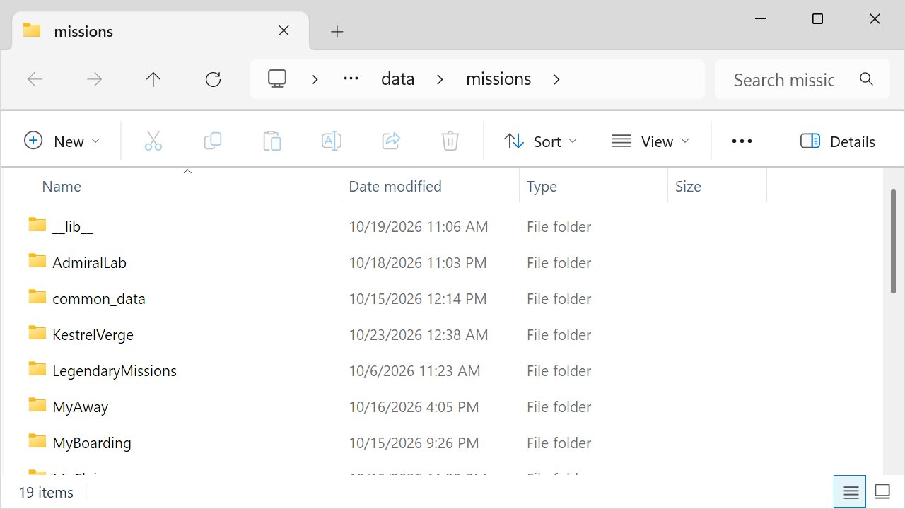

Class 6, Lecture 10 - Publishing¶
What you will have at the end¶
Act One of your campaign, as a file you can send to someone who will run it for their own crew. It has a name of its own, a line on the game's mission list that says what it is and which version, and nothing in it that gives the plot away. And a note to send with it that tells the host the four things a campaign needs and a single mission does not.

The mission folder, and the zip you hand to a friend.You change one line of description.yaml, rename a folder, and write a note.
The video¶
About 5 minutes. Subtitles are available in the player.
Before you start¶
- Your
MyUniversemission as Lecture 8 left it, played at a table at least once. (Lecture 9 works in a copy and changes nothing here.) sbs lint MyUniversesaysclean.- You have done Class 1 Lecture 12. This lecture is that one again, for a universe, and it does not repeat the parts that are the same.
Words for this lecture:
| Word | Meaning |
|---|---|
| Host | The person whose computer runs the server window. Their computer keeps the save |
| Release | One sending of the mission: Act One, version 1 |
| Zip | One file that holds a folder. You made one in Class 1 Lecture 12 |
Step 1 - What a campaign adds to shipping a mission¶
In Class 1 you sent a friend a folder, they played it in an evening, and that was the end of it. A campaign is different in four ways, and each one is a line in your note.
| A single mission | A campaign |
|---|---|
| Played once | Played for months, from a save on the host's computer |
| Sent once | Sent again, each time you finish an act |
| The title can change | The title names the save. Change it and the crew starts again (Lecture 1) |
| Your notes are yours | Your notes are in the folder, with the whole plot in them |
Step 2 - The line on the mission list¶
Open description.yaml. One line of it is shown under the mission's name on the game's
list of missions. Say what this is, and which release.
Leave the line Visible Mission Name: The Kestrel Verge alone, and leave the title in
story.mast alone. From the day a crew first plays, that name is where their save is.
The rule from Class 1 Lecture 12 applies here, and it is the one mistake on this page
that can stop the game for everybody. No hyphen and no colon in what you write after
Description:. Lint checks it:
| What you wrote | What lint says |
|---|---|
Description: A campaign for one ship - Act One |
An error: "Description: has a hyphen in a value that is not in quote marks ... a bare hyphen here stops the GAME from starting at all, for every mission" (description-stops-the-game) |
Description: Act One: five evenings |
An error: "Description: has a second colon in a value that is not in quote marks, which the game reads as a list of fields, not as your words" (description-stops-the-game) |
With the hyphen, the last line of lint's answer is
1 amd + 1 mast file(s): 1 error(s), 0 warning(s). Do not start the game until it says
0 error(s).
Version numbers are for you and the host. "Version 1" is Act One as first sent. If you fix a lead's wording and send it again, that is "Version 2", still Act One. The host can read the line and know which they have.
Step 3 - Give the folder its name¶
Every student of this class has a folder called MyUniverse. Give yours its own name
before it leaves your computer, the way you did in Class 1.
- Close VS Code. Close the game.
- In File Explorer, open
C:\Cosmos\data\missions. ClickMyUniverseonce, pressF2, typeKestrelVergeand press Enter. Letters and numbers only. - Open the folder in VS Code under its new name.
Two things were measured about the folder's name, on copies of this mission under several different names.
- Nothing inside the files holds it. Each copy linted
cleanand played. - The save does not follow the folder. It follows the title. Every one of those copies read and wrote the same save file, because they had the same title. So renaming the folder does not lose your own save. And two folders on one computer with the same title are playing the same campaign, whether you meant it or not.
From now on your commands name the new folder:
Step 4 - Three checks¶
The checks from Class 1 Lecture 12, in the same order.
The report ends with a block for your folder, and a count:
KestrelVerge
ok story.json 1 sbslib, 23 mastlib, 0 media
ok libraries all declared libraries present
ok art 0 baked, 0 not yet drawn, 0 half-baked in mission art
23 mastlib is the libraries a universe made from today's template runs on. Two of
them are the Open Universe's own. Your Class 1 mission had about a dozen. Your count
may differ by one or two, and an older folder has fewer.
The line that counts the checks must end 0 problems.
Then the walk, from Lecture 8, on a deleted save. And delete the save again afterward.
Step 5 - Take out what is not the mission¶
Close the game and VS Code. Open the mission folder in File Explorer.
1. Move your own pages out. Put these in your Documents folder. They are yours, and they are the plot.
| Move out | Why |
|---|---|
campaign.md |
Every act, the ledger, the ending |
playtest.md |
What other crews did |
Any evening_NN.yaml you kept here |
A save names every step of your story by its key, the ones ahead too |
2. Delete what the tools made. All of it comes back when it is needed.
| Delete | What it is |
|---|---|
__docs__ (a folder) |
The printed editions. The bible is the whole plot in order |
__site__, or the folder you named with -o |
The website from Class 5 Lecture 9, if you made one |
__pycache__ (a folder) |
Scratch that lint and the game make |
mast.compile.log, mast.runtime.log, debug.log |
Logs. debug.log can hold the path of your game's folder |
3. Count what is left. For the universe as this class builds it, seven files:
If you split your universe in Class 5 Lecture 9, you also have jobs.amd, lore.amd
and the dialogue folder with its files. They go too.
4. Zip the folder. In data\missions, right-click the KestrelVerge folder itself
and compress it, as in Class 1 Lecture 12. You get KestrelVerge.zip.
5. Put your pages back into your own folder afterward, or keep them in Documents from now on. A folder you send from should not be the folder you plan in.
What the host can still read. kestrel_verge.amd is plain text, and it is the whole
of Act One. A host who opens it has read the campaign. That is the same as handing a
game master the adventure: it is what a host is for. If you want to play in your own
campaign as crew, someone else cannot host it for you without reading it.
Step 6 - The note for the host¶
Send this with the zip. Change the name in five places.
This is a campaign for Artemis Cosmos: The Kestrel Verge, Act One, version 1.
It is five evenings for one ship. You are the host: your computer keeps the game.
To set it up:
1. Open File Explorer and go to the game's folder, then data, then missions.
2. Put the KestrelVerge folder from the zip file in there. When you open
data\missions\KestrelVerge you must see story.mast at once, not another folder.
3. Click in the address bar of that missions window, type cmd and press Enter.
4. Type each of these lines and press Enter after each:
sbs update
sbs fetch "KestrelVerge" --update-libs
sbs run server,helm,science,comms -m KestrelVerge map=0
Four things about a campaign:
1. Start it the same way every week. It continues where the crew stopped.
Never choose New Game on the start screen. It replaces the save and does not ask.
2. Leave the ship's name alone if you can. One ship renamed between evenings keeps
its record. Do not rename two in the same week.
3. End each evening by jumping home, then close the game.
4. After each evening, copy this file somewhere safe:
data\missions\common_data\saves\universe_save_the_kestrel_verge_1.yaml
If anything goes wrong, close the game and copy it back.
When Act Two is ready I will send the folder again. Delete the old KestrelVerge
folder and put the new one in its place. The save is not in that folder, so the
crew carries on.
Where each line of the note comes from:
| The note says | Measured in |
|---|---|
sbs fetch "KestrelVerge" --update-libs |
Class 1 Lecture 12, on a second copy of the game, for a Class 1 mission. Not run again for this page. For a universe the line is the same, and the libraries it fetches include Open Universe's |
| It continues where the crew stopped | Lecture 1 |
| New Game replaces the save | Class 5 Lecture 2. The game keeps the replaced campaign once, beside the save, as a file ending .previous.bak (Lecture 2) |
| The ship's name | Lecture 2: one renamed ship kept its standing and its jobs. That two renamed at once are not matched is from the game's own notes, and was not played |
| Jump home, then close | Lecture 1 |
| The save's name and place | Class 5 Lecture 2. It is named from the title, not the folder |
| A new folder, the old save | Lecture 1: a save was continued after the universe file had been changed, with records added and words rewritten. The save file is in common_data, outside the mission folder |
[Not checked on two computers: whether a crew member whose console is on another computer needs the mission folder as well. The host does.]
Step 7 - Sending Act Two¶
When the next act is written, the release is the same seven steps with three rules, all from Lecture 1.
| Rule | Why |
|---|---|
| The title does not change. Not by a letter | A new title is a new, empty save |
| Nothing the crew has met is deleted or renamed. You add | Lecture 9 measured it. A step deleted while the crew is on it strands everything after it. A key renamed with no Was: line starts again as a new, hidden step |
| Act Two is opened by a step the crew's save has not finished | A finished step does not reveal again, so Then: reveal s06_go on Act One's ending does nothing for a crew that has already finished it. Lecture 11, Steps 6 and 9, has the way that was played: a quiet step left open at the end of Act One, finished by an answer in Act Two. If your Act One is already out without one, give s06_go Starts when: at once |
Change Version 1 to Act Two, version 1 in description.yaml, and send the folder.
Before you send it, do the one check a campaign needs that a mission does not: copy your own save from the end of Act One into place, start the new folder, and see that the first lead of Act Two is in the Quest Log.
Step 8 - If you use GitHub¶
Class 1 Lecture 12 mentions a second way: the files at the top of a repository named
for the mission, on a branch called main, fetched by the host with
sbs fetch KestrelVerge -u yourname. That page did not try it and neither did this one.
There is also an sbs release command. It is for the people who publish the game's own
libraries, and it needs rights to their repositories. You do not need it.
The zip file is the way that was measured.
If something goes wrong¶
| What the host sees | Likely cause |
|---|---|
ERROR: no mission here to read the list of libraries from: |
The zip was unpacked into a folder inside a folder. Class 1 Lecture 12 |
| The game stops as it starts, for every mission | A hyphen in description.yaml. They delete the folder. You fix Step 2 |
sbs doctor KestrelVerge has a row that begins !! libraries |
The fetch line in the note was skipped. The row names the cure. Class 1 Lecture 12 |
| The crew starts Act Two at evening 1 | The title changed, or the host chose New Game, or the save is on another computer |
| The crew's standing is gone and the story is not | Two ships were renamed in the same week, so the game could not tell which record was whose. One renamed ship keeps its record |
| The host knows the ending | They read campaign.md. Step 5 |
Exercise¶
- Write your
Description:line. Run lint on it. - Rename your folder. Lint, doctor, walk.
- Copy the whole folder somewhere else first. Then clean the copy, and count what is left against the list in Step 5.
- Zip it. Open the zip and look inside. Is
campaign.mdin it? - Write your note. Read it as someone who has never typed a command.
- If you have a second computer, or a friend with the game: send it, and watch them follow the note without helping.
Checkpoint¶
You are done when all five are true:
description.yamlsays which act and which version, with no hyphen and no colon.- The folder has a name of its own, and lint and doctor are happy with it under that name.
- The zip has no
campaign.md, noplaytest.md, no__docs__and no save in it. - Your note tells the host about Continue, the ship's name, going home, and the copy of the save.
- You know how Act Two will reach a crew that has finished Act One: Lecture 11, Step 9.
Next¶
Lecture 11 is the capstone: Act One built and played to its end across three evenings
of your own, and Acts Two to Four outlined. Everything it asks of you is on your
campaign.md already.
Further reading¶
- Class 1 Lecture 12, "Ship a quest mission": the zip, the note, and what goes wrong on the other computer, all measured.
- Class 5 Lecture 2, "Your universe file": the save's name, Continue and New Game.
- Class 5 Lecture 9, "Organizing a big universe": the printed editions, including the players' one you can hand to a crew.
Download this lecture's finished files (a zip of its example folder).